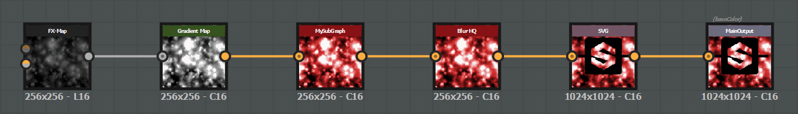
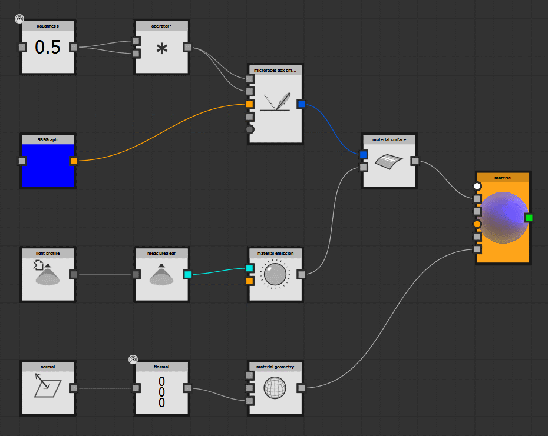

Substance creation
Sample 1: Hello World
demohelloworld.demoHelloWorld() is a good starting point to visualize how to use the API in order to create substances.{kind=link}
Launch the script with this command line, from the folder demos/:
python demoHelloWorld.py
And check the result by opening the generated file sample/resultDemoHelloWorld.sbs:

Sample 2: Full creation demonstration
demos.demoCreation() is a complete demonstration of what this API allows to create.python demos.py -fct: demoCreation -args: "../sample/argsDemoCreation.xml"
And check the result by opening the generated file sample/resultDemoCreation.sbs:
{kind=link}
Here is the detail of the objects created by this script:
A package (e.g a new substance document:
SBSDocument)- A first graph (
SBSGraph), which will be used in the second one, with: The definition of its exposed parameters and the widget associated to them.
An input node.
Two simple Filters with their parameters (one is dynamic and set as the value of one of the graph input parameters).
An output node, with the definition of its usages.
The connections for all these nodes.
- A first graph (
{kind=link}
- A function (
SBSFunction), with: The definition of its input parameters.
Some function nodes provided by Substance Designer library.
A instance of a function (Pi) included in the default package (sbs://).
The definition of the connections, and the output node of the function.
- A function (
{kind=link}
- A second graph (
SBSGraph), with: An input parameter.
A FxMap node, with the definition of the FxMap graph and some dynamic parameters.
A gradient filter with the definition of the key values.
An instance of the first graph created before, and drive one of its parameter by a function: The function retrieves the value of the graph input parameter and pass as the input value of an instance of the function created above.
An instance of the substance Blur HQ provided in the default substance package.
A svg node, which references an external resource included in the folder sample/.
An output node.
- A second graph (
Sample 3: MDL Graph creation
demos.demoCreationMDL() shows specifically the creation of a MDL Graph using the API.python demos.py -fct: demoCreationMDL -args: "sample/argsDemoCreationMDL.xml"
And check the result by opening the generated file sample/resultDemoCreationMDL.sbs:
{kind=link}
- This script creates a new MDL Graph from scratch, mostly identical to a metallic material but with an emissive part:
It declares some constants as input parameters of the graph.
It instantiates some native mdl nodes, such as ‘material_emission’ and ‘material_surface’.
It creates a new light profile resource and uses it to handle the emissive term of the material.
All the objects, libraries and functions related to MDL are included in the module mdl.
Highlights on the most important modules and classes of the API
The objects are created from the parent object that contains them, so the majority of creation methods are located in the following classes:
SBSDocument: creation of groups (e.g. folders), graphs and functions.SBSGraph: creation of compositing nodes and definition of input parameters.SBSFunction: creation of function nodes and definition of input parameters.SBSDynamicValue: creation of function nodes and definition of input parameters.SBSParamsGraph: creation of FxMap nodes.
The module sbslibrary contains the definition of all the content available in Substance Designer:
a library of Filters, their definition (inputs, outputs, parameters) being defined in module
sbslibrary.sbsfilters.a library of Functions, their definition (inputs, outputs, parameters) being defined in module
sbslibrary.sbsfunctions.a library of FxMap, their definition (inputs, outputs, parameters) being defined in module
sbslibrary.sbsfxmapnodes.
The module sbslibrary.sbsdictionaries contains the dictionaries allowing the mapping between enumeration values (defined in the module sbsenum) and the associated string.e sbsenum.
This example shows the different creation capabilities:
from pysbs import context, sbsenum, sbsgenerator
# Init the context
myContext = context.Context()
# Substance Creation
####################
# Create a new Substance with a graph called 'DemoGraph'
sbsDoc = sbsgenerator.createSBSDocument(aContext = myContext,
aFileAbsPath = 'my/New/Package/Absolute/Path.sbs',
aGraphIdentifier = 'DemoGraph')
# Create another graph in this Substance, with some parameters
secondGraph = sbsDoc.createGraph(aGraphIdentifier = 'SecondGraph',
aParameters = {sbsenum.CompNodeParamEnum.OUTPUT_FORMAT:sbsenum.OutputFormatEnum.FORMAT_16BITS},
aInheritance= {sbsenum.CompNodeParamEnum.OUTPUT_FORMAT:sbsenum.ParamInheritanceEnum.ABSOLUTE})
# Create a function and put it under a new folder 'Functions'
myFunction = sbsDoc.createFunction(aFunctionIdentifier = 'myFct', aParentFolder = 'Functions')
# Create a new graph from a template
# All the content of the template graph and its resources / dependencies will be added to the edited Substance
copyGraph = sbsDoc.createGraph(aGraphIdentifier = 'CopyGraph',
aTemplate = 'my/Template/Absolute/Path.sbs/graphToCopy',
searchForExistingReferenceByIdentifier = True,
copyInternalReferencedObjects = True)
# Resource creation
myRes = sbsDoc.createLinkedResource(aResourcePath = 'my/Resource/Absolute/Path.png',
aResourceTypeEnum = sbsenum.ResourceTypeEnum.BITMAP)
# Graph edition
###############
xOffset = [192,0,0]
# Get the graph created with the document
demoGraph = sbsDoc.getSBSGraph(aGraphIdentifier = 'DemoGraph')
# - Bitmap node that uses the previously created resource
# (this method can also create the resource if an absolute path is given)
bitmapNode = demoGraph.createBitmapNode(aSBSDocument = sbsDoc,
aResourcePath = myRes.getPkgResourcePath(),
aParameters = {sbsenum.CompNodeParamEnum.COLOR_MODE:sbsenum.ColorModeEnum.COLOR})
# - Instance of Blur HQ from the default package library
blurHQNode = demoGraph.createCompInstanceNodeFromPath(aSBSDocument = sbsDoc,
aPath = 'sbs://blur_hq.sbs/blur_hq',
aGUIPos = bitmapNode.getOffsetPosition(xOffset),
aParameters = {'Intensity':3.2})
# - Output node with the usage baseColor
outputNode = demoGraph.createOutputNode(aIdentifier = 'DemoOutput',
aGUIPos = blurHQNode.getOffsetPosition(xOffset),
aOutputFormat = sbsenum.TextureFormatEnum.DEFAULT_FORMAT,
aUsages = {sbsenum.UsageEnum.BASECOLOR: sbsenum.ComponentsEnum.RGBA})
aGraph.connectNodes(aLeftNode = bitmapNode, aRightNode = blurHQNode)
aGraph.connectNodes(aLeftNode = blurHQNode, aRightNode = outputNode)
# Write the document
sbsDoc.writeDoc()